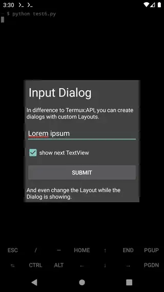
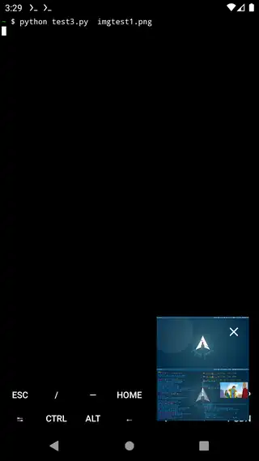

Termux:GUI
برمجة
With this plugin you can make GUI applications in Termux without using VNC or a X11 server. This plugin uses the native Android GUI components to display everything. That means it seamlessly integrates into the Android experience, but standard applications written for X11 don't work. Also it require
✓ ترخيص مفتوح (GPL-3.0-only) · آخر تحديث: 2025-02-20
0.1.6الإصدار
3.3 MBالحجم
GPL-3.0-onlyالرخصة
Open in Kanzتحميل APK (3.3 MB)
Download APK
SHA-256: f9bcb38c65a193da2b307385a55ab86632c4f9c1abd5250a0e1a8bd21145013f


تطبيقات تانية لنفس المطوّر (9)
More apps from this developer: com.termux
امسح الكود لفتح صفحة التطبيق
Scan to open this app page
لو كنز مش متثبت عندك: نزّل متجر كنز.
Not installed? Get the Kanz store.